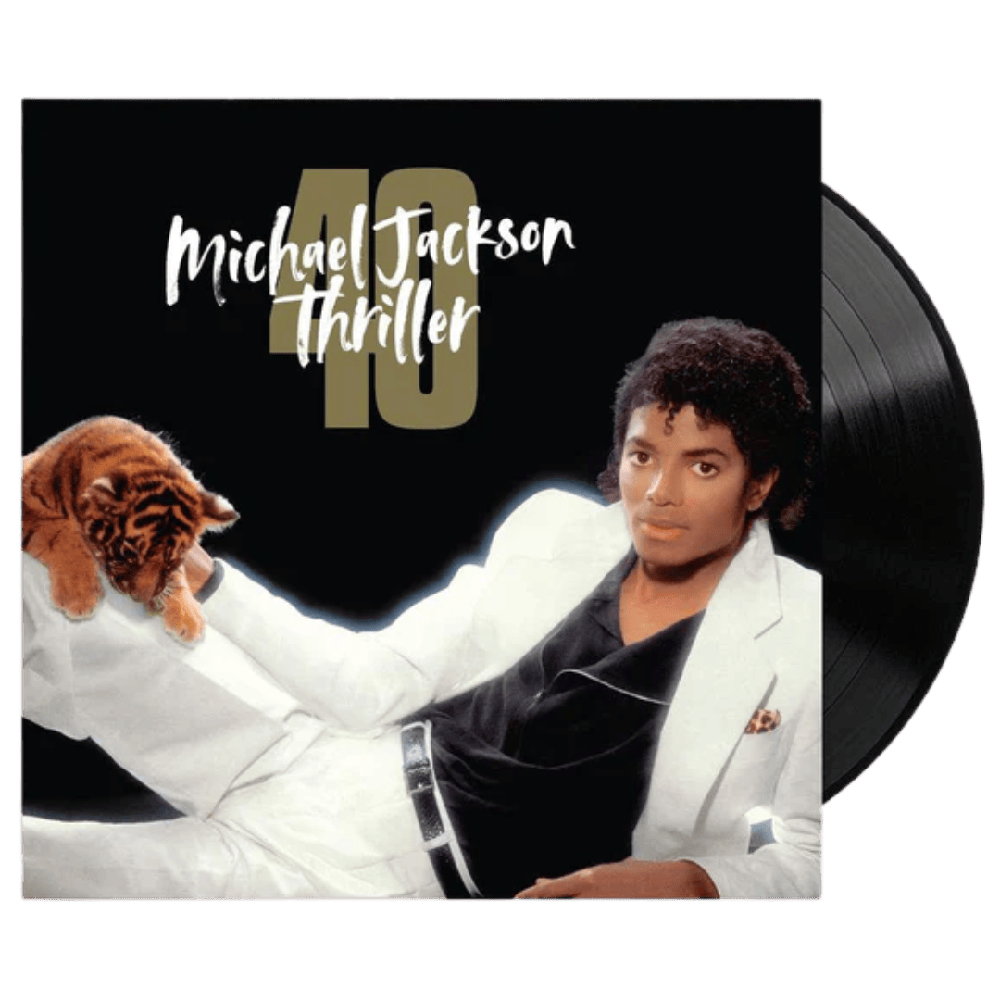
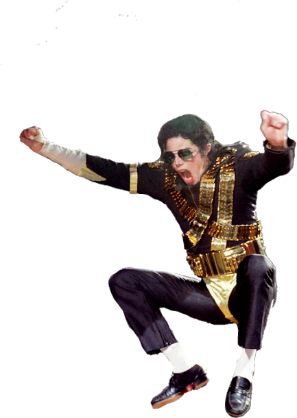

Michael Jackson
Michael Jackson, surnommé le "Roi de la Pop", a marqué l'histoire de la musique grâce à son talent unique, son charisme, et sa capacité à repousser les limites de l'art musical. Ce site célèbre son héritage.
Fan Page MJ
Bienvenue sur le fansite dédié à Michael Jackson. Découvrez des informations, des photos, des vidéos, et bien plus !
Biographie
Michael Jackson, surnommé le "Roi de la Pop", était un artiste légendaire connu pour sa voix unique et ses performances captivantes. Né le 29 août 1958 à Gary, Indiana, il a débuté sa carrière dans les Jackson 5 avant de devenir une icône mondiale. Ses albums, tels que "Off the Wall", "Thriller" et "Bad", sont parmi les plus vendus de tous les temps. Avec le célèbre "moonwalk" et des clips révolutionnaires comme "Thriller" et "Beat It", il a redéfini les standards de l'industrie musicale.
Actualités
Le légendaire clip de "Thriller" a récemment franchi le cap du milliard de vues sur YouTube, faisant de Michael Jackson le premier artiste du 20ᵉ siècle à avoir quatre vidéos dans le "Billion Views Club". La version remasterisée, sortie en 2022 pour le 40ᵉ anniversaire de l'album, a contribué à ce succès. En parallèle, un biopic sur sa vie est en préparation, avec l'approbation de la famille Jackson.
Galerie
Photos et vidéos de Michael Jackson, ainsi que des créations de fans. Retrouvez des clichés iconiques de ses concerts, tournées, et collaborations artistiques.
 Musiques
Découvrez les albums emblématiques de Michael Jackson, tels que :
- Thriller (1982) : L'album le plus vendu de tous les temps, avec des hits comme "Billie Jean" et "Beat It".
- Bad (1987) : Avec des titres comme "Man in the Mirror" et "Smooth Criminal".
- Dangerous (1991) : Un mélange unique de pop, R&B, et new jack swing.
- HIStory (1995) : Une rétrospective de ses plus grands succès.
Explorez également ses chansons inédites et ses collaborations mémorables.